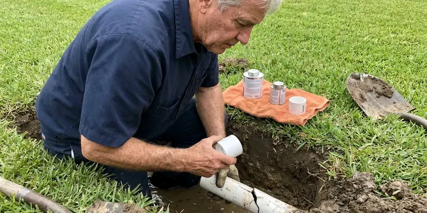

Polybutylene Plumbing Replacement in Valley Falls, RI
Our crews in Valley Falls, RI replace polybutylene room by room and turn your water back on each evening.
- Fast Free Poly Pipe Inspections
- Code Compliant Work
- PEX-A and Copper Options
- Upfront Pricing

Poly Pipe in Your Valley Falls, RI Home?
One planned repipe costs far less than a sudden burst and an insurance claim.
Local Polybutylene Replacement in Valley Falls, RI
JPN Plumbing handles polybutylene replacement in homes across Valley Falls, RI, mostly in houses built between about 1978 and 1995. Look for a PB2110 stamp. Both the pipe and those fittings get brittle from the inside, so a house with one poly leak is usually at risk of the next one anywhere in the system.
Some of what we do:
- Small wall openings and matched patches
- PB2110 checks at heater, sinks and main
- Complete attic-routed PEX-A or Type L copper replacement systems

Additional Plumbing Maintenance Services in Valley Falls, RI
Our maintenance and specialty plumbing services in Valley Falls, RI catch small problems before they become emergencies.


Customers
Why Choose JPN Plumbing for Polybutylene Plumbing Replacement in Valley Falls, RI?
Our crews have replaced poly pipe in Rhode Island homes of every type, from slab ranches to two-story houses. Tight attics and finished walls are routine for us.
- Local Knowledge, We know Rhode Island building codes and what local water does to aging pipe.
- Steady Water, New pipe keeps pressure steady without wondering which fitting goes next.
- Resale Value, A documented repipe clears an issue inspectors flag about poly-era homes.
Citywide Coverage
Every neighborhood of Valley Falls is in our service area, especially subdivisions built during the 1980s and early 1990s. Our crews know those builders. Tract homes from that period were often piped alike, so after a few in one subdivision the rest go quicker.
Experienced Team
Our plumbers have replaced polybutylene in hundreds of homes and know how to trace lines through attics, walls and slabs. They spot poly fast. Behind panels, inside cabinets and above garages is where poly gets missed, and our plumbers check every one of those spots.
Safety-First Approach
We protect your home and family throughout the poly replacement. Attics need caution. Our crews watch for wiring, ducts and ceiling drywall when they work overhead, and they schedule attic time for the cooler part of the day when the weather is extreme.
Trusted Certified Valley Falls Plumbing Services Professionals
At JPN Plumbing, we are proud to offer certified plumbing services throughout Valley Falls, RI. Those papers on the wall mean something. Every repair, install and maintenance visit follows strict safety and quality rules, and the plumbers doing the work carry recognized industry credentials.
Call Us Now PHCC Plumbing Contractor Recognition
PHCC Plumbing Contractor Recognition Better Business Bureau (BBB) Accreditation
Better Business Bureau (BBB) Accreditation Angi Certified Pro
Angi Certified Pro ISO 9001 Quality Management Certification
ISO 9001 Quality Management CertificationComplete Polybutylene Plumbing Replacement in Valley Falls, RI
The Cost of Polybutylene Replacement in Valley Falls, RI
Price depends mostly on house size, the number of bathrooms, attic access and whether you pick PEX or copper. PEX costs less. One burst can cost more in drywall, flooring and cabinets than the full replacement, not counting your deductible. Every estimate breaks out labor, pipe, permit and drywall.

Full Home Polybutylene Repiping in Valley Falls
A full replacement takes every poly supply line out of service, not just the sections that have failed. Partial jobs leave risk behind. New pipe goes from the main to every fixture and appliance, each one gets a new quarter-turn stop and the system is tested before any wall is closed.
Polybutylene Identification and Inspection in Valley Falls
Polybutylene is usually gray, though it can be white, blue or black, and is often stamped PB2110. Check the heater first. You may also see it under sinks, near the main shutoff or coming through the garage wall, and we trace runs through the attic to confirm how much of the house it serves.
Why Polybutylene Fails in Valley Falls
Polybutylene reacts with oxidizers like chlorine that water utilities use to disinfect tap water. Over the years, the pipe and its acetal fittings get brittle from the inside, then crack along the inner wall until one splits under normal pressure. Private wells serve many rural homes, and owners around Valley Falls benefit from testing for acidity, iron and other typical concerns. Hot water speeds it up. Most of the failures we see are on hot lines and at fittings close to the heater.
Polybutylene Leak Repair in Valley Falls
Repairs on polybutylene are temporary by nature, because the pipe next to the repair is the same age. A repair buys time. When a poly line leaks, we cut out the bad section and splice in PEX with approved transition fittings, which stops the leak and gives you time to schedule a full replacement on your own terms.
Manufactured Home Poly Replacement in Valley Falls, RI
Manufactured homes from the poly era often have polybutylene lines in the floor or the belly underneath. We replace those lines with PEX sized for the home and secure them properly to the frame. Exposed lines get checked. Coastal winds can drive cold into walls and freeze pipes that seem well protected, particularly during deep cold snaps. Heat tape and insulation on exposed runs get inspected and replaced where needed, so the new supply lines are protected under the home.
Fitting Failure and Emergency Repair in Valley Falls
Acetal plastic and copper crimp ring fittings are often the first part of a poly system to fail. Attic fittings fail hard. After an emergency repair we schedule the full replacement, since removing the poly system is the only lasting fix.

Affordable Polybutylene Solutions in Valley Falls, RI
Poly replacement is a big expense, so we give you options instead of a single take-it-or-leave-it number. PEX-A usually costs less than copper. We can also price the interior repipe and the yard service line separately, so you can do the inside first and the service line later if that fits your budget better.
Polybutylene Plumbing Replacement Near Me in Valley Falls, RI
Local crews know the Rhode Island housing stock, including which builders used poly and where they ran it. It shortens the visit.
Living in Valley Falls, RI, you want a plumber who knows local homes and local permits. Permits here are routine for us. That keeps inspections on schedule, so walls get patched on time and the job finishes when we said it would instead of stretching into a second week.
JPN Plumbing at a Glance
- Fully licensed plumbing team covering Valley Falls, RI
- Same-day appointments and 24/7 emergency response
- Clear written estimates, no hidden fees
- 4.8-star rated by 684+ Rhode Island customers
Valley Falls Map
Valley Falls Information
- Population
- 12,094
- Area codes
- Local
- Service area
- Valley Falls and communities within 40 miles
- Nearby
- Central Falls, Pawtucket, Cumberland Hill, Providence
Many Valley Falls, RI homes from the 1980s and early 1990s still have poly pipe, and a planned swap costs far less than a flood.
Talk to a Plumber
Reach out to JPN Plumbing for honest, reliable plumbing from people who know the trade in Valley Falls, RI.
Our Specialized Plumbing Services in Valley Falls, RI
At JPN Plumbing, you get every kind of plumbing service from one company across Valley Falls, RI. From leak detection to full system installs, our team works fast and charges fair prices on homes and commercial properties alike. Explore our core services below:


Our Poly Pipe Replacement Process in Valley Falls, RI
JPN Plumbing follows the same steps on every poly job, which keeps the timeline and price steady.
Free Inspection
Call (401) 364-2507 to schedule a free polybutylene inspection. We confirm the pipe type and give you a firm written replacement price.
Replace and Test
Our crew installs new PEX or copper lines to every fixture and pressure tests the system. Water is restored at the end of most work days.
Patch and Document
We patch and texture the openings and pass the final inspection. You receive photos, permits and warranty documents for your files.
Frequently Asked Questions About Polybutylene Plumbing Replacement in Valley Falls
PEX replacements usually run $4,000 to $10,000, and copper often runs $8,000 to $15,000 or more. Access changes the price. Size, fixtures and attic or crawlspace access set most of the cost, and you get a written quote after we see the house.
Properly installed PEX usually lasts 25 to 50 years. Copper often goes further. In water that does not attack it, Type L copper can last 50 years or more, and both are major upgrades over poly.
Most of our PEX replacements use Uponor AquaPEX with ProPEX expansion fittings. Viega PEX is another option. Copper jobs use domestic Type L, and we keep one PEX brand throughout each house so the warranty holds.
Replacing an entire supply system requires routing, pressure testing and permits. Licensed crews work faster and leave you warranties and paperwork.
Both are good choices. PEX is cheaper. PEX bends, handles freezes and movement and goes in quickly, and copper is stiff, heat tolerant and long proven, so it comes down to budget, water and preference.
Every poly replacement we do comes with a written warranty on materials and labor. Manufacturer coverage adds more. Both warranties come in writing with the photos and permit record, all in one place for later.
In most cases, yes, a plumbing permit is required for full repiping in Valley Falls. Our office handles it. We handle the application, the open-wall inspection and the final sign-off, leaving no paperwork for you.
You can, but the rest of the system is aging the same way. Spot repairs usually just move the next leak, and full replacement ends it.
Hear From Customers Who Hired Our Plumbing Experts

Kevin O.
Before buying our house I paid for a sewer camera inspection. JPN Plumbing found a belly in the line that held standing water about forty feet from the cleanout. We used the video to get the sellers to fix it before closing.
Sewer Camera Inspection · Woonsocket, RI
Brian W.
I smelled gas behind the dryer and called right away. The plumber found a corroded flex connector, replaced it, and pressure tested the whole line before turning the gas back on. He let me watch the gauge hold steady for fifteen minutes.
Gas Line Repair · Cumberland Hill, RI
Jessica T.
We were adding a gas range in a kitchen remodel and needed a new line run from the meter. The plumber pulled the permit, ran the pipe through the crawl space, and had it inspected and approved within the week.
Gas Line Repair · East Providence, RI
Patricia H.
We had a slab leak that two other companies could not find. JPN Plumbing located it in under an hour with a listening device. They rerouted the line through the attic instead of breaking up the floor, so we kept our kitchen tile.
Slab Leak Repair · Woonsocket, RI
Tyler J.
We bought a taller comfort height toilet for my dad, who just had knee surgery. The plumber pulled the old one, found the flange was cracked, and replaced it before setting the new bowl. Took about two hours.
Toilet Installation · Woonsocket, RI
Megan L.
Our upstairs tub drained so slowly that every shower turned into a bath. JPN Plumbing pulled a wad of hair out of the stopper and then snaked the line past the trap. Three months later it still drains fast.
Drain Cleaning · Cumberland Hill, RI